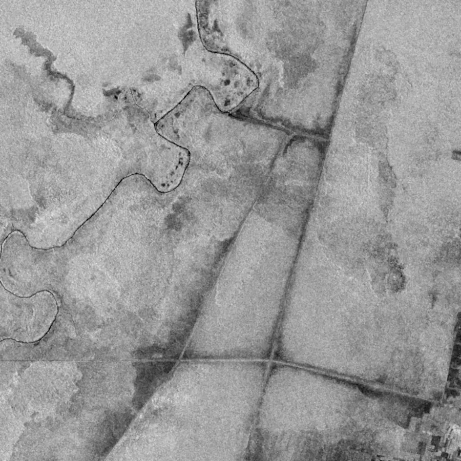
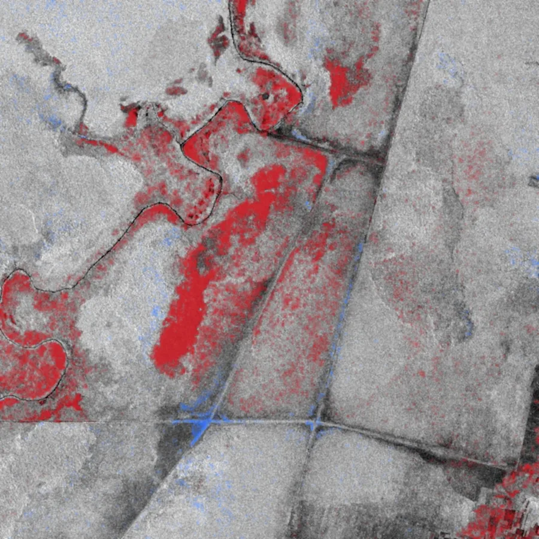
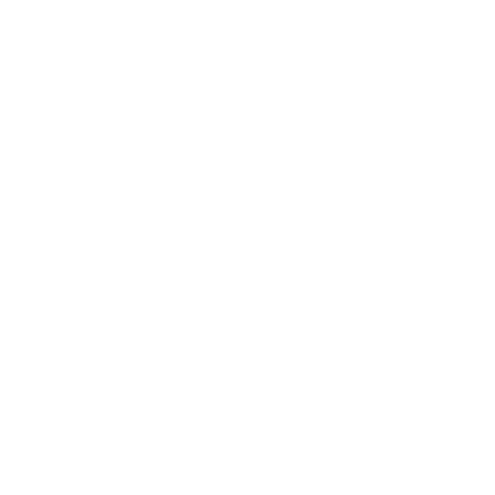
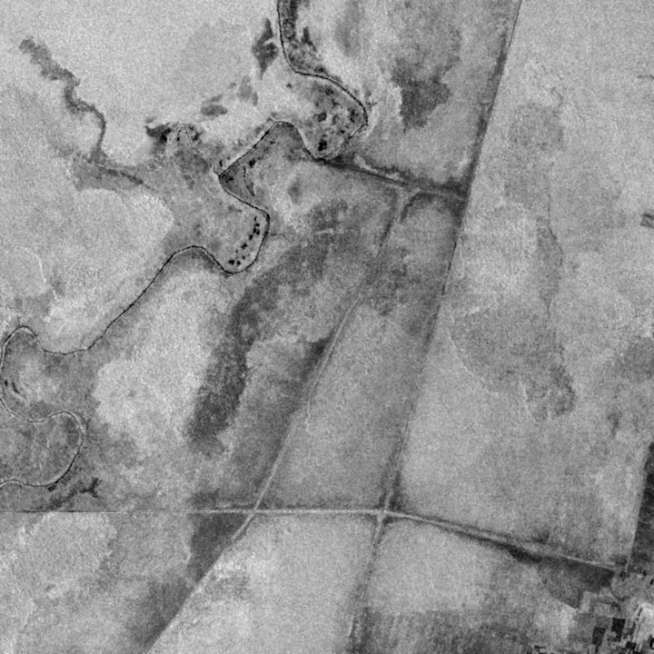
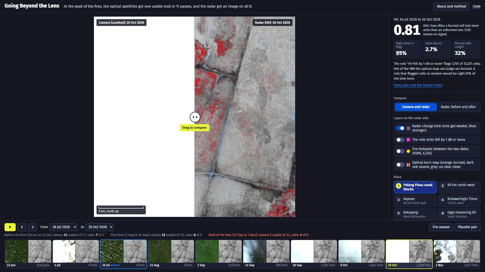

NASA Space Apps Challenge 2026, Dancing with the SARs
What the camera cannot see
NISAR radar sees the burn scars of Indonesia's 2026 peat fires through the smoke that blinds the camera satellites.
- By
- Rabbani Putrowi, Jakarta local event
- Try it
- rabbaniputrowi-alt.github.io/what-the-camera-cannot-see


When peat burns, the sky closes.
- 160,910 VIIRS fire detections in September and October 2026, in a box of about 145 by 165 km around Pulang Pisau, Central Kalimantan.
- Indonesia's official burned-area map (SiPongi, Ministry of Forestry) is drawn on Landsat images with the hotspots laid over them, then checked on the ground.
- At the peak of the fires, Landsat could not see the ground. Pictured: the same place, the same day.


At the peak, the camera got 1 usable look in 11 passes. The radar got 8 of 8.
Camera: every Landsat and Sentinel-2 pass over window 1, 15 Sep to 1 Nov
Radar: every NISAR pass over the same window, two orbits
A usable look covers 90% of the 22 km window, and the satellite's own cloud mask calls less than half of it cloud. The rule was fixed before counting.
Across the three central Kalimantan windows: 4 of 39 camera passes against 24 of 24 radar passes. Farther from the fire core the camera did better. The page lists every pass in all eight windows.
One page. Drag the slider and the scar appears.

- Any two radar dates, two orbits, eight places in Indonesia.
- Layers: radar change, a fixed rule (echo fell by 1 dB or more), VIIRS hotspots, an optical burn map.
- Every date pair is scored live against the optical map, placebo pairs from before the fires included.
- A filmstrip of every radar pass with the camera image from the same days, and Play.
- Static and open: no login, no outside requests, works on a phone.
rabbaniputrowi-alt.github.io/what-the-camera-cannot-see
Before the fires the test reads 0.50. In the fire season it climbs to 0.81.
right when the rule flags a cell (946 of 998), 16 Jul to 20 Oct. A rule flagging cells at random would be right 61% of the time here
of unburned cells flagged by mistake
of burned cells caught. The rule finds the severe core of the burn, not every edge
0.81 has a 95% interval of 0.75 to 0.87 (2 km blocks resampled). The second orbit looks from the other side: 0.73 in the fire season, placebo pairs 0.46 to 0.50. The 1 dB rule was set before scoring and is not tuned.
HV sees the burn in Kalimantan's peat. It weakens in Sumatra and fails on Papua's savanna.
| Place | Fire season | Before the fires | Reading | |
|---|---|---|---|---|
| 1 | Pulang Pisau | 0.81 | 0.45 to 0.51 | Clean |
| 2 | 50 km north-west | 0.91 | 0.45 to 0.77 | Signal, placebo drifts |
| 3 | Kapuas | 0.79 | 0.46 to 0.68 | Signal, placebo drifts |
| 4 | Kotawaringin Timur | 0.76 | 0.34 to 0.64 | Signal, placebo drifts |
| 5 | Ketapang | 0.81 | 0.26 to 0.50 | Signal, placebo drifts |
| 6 | Ogan Komering Ilir | 0.68 | 0.33 to 0.50 | Weak |
| 7 | Bayung Lencir | 0.76 | 0.31 to 0.63 | Weak, rule right 23 to 37% |
| 8 | Merauke (savanna) | 0.65 | 0.07 to 0.28 | Fails |
HV AUC on the better orbit for the fire-season pair, and the range over the placebo pairs on both orbits. 0.50 means no signal.
The challenge asks which polarization shows the change. HV, the cross-polarized channel. HH never rises above its own placebo range in any of the eight windows.
Next: every pass, every peat district.
- Scale out. The pipeline streams small windows from each NISAR scene without downloading it. Run it over every peat district, every 12 days.
- Earn the rule. Test the 1 dB rule on places it has never seen, and add proper speckle filtering, before anyone relies on it.
- Hand it over. Give SiPongi's burned-area mappers a radar layer for the weeks when Landsat sees only smoke.
Limits, stated on the page: eight 22 km windows, one fire season, mostly provisional radar data. It is not a burned-area product, and radar change alone is not proof of fire.
Built only on open data
- NISAR L2 GCOV, L-band HH and HV, NASA and ISRO, from the Alaska Satellite Facility DAAC
- VIIRS active fires, 375 m, NASA FIRMS
- HLS v2.0, Landsat and Sentinel-2 surface reflectance, NASA LP DAAC
Open source
MIT licence. Rebuild steps and every reference in the repository:
github.com/rabbaniputrowi-alt/what-the-camera-cannot-see
AI use: the code and drafts of the text were written with an AI assistant (Claude, Anthropic), directed and checked by Rabbani. Details in the README.
Not endorsed by NASA. No NASA logos or mission identifiers are used.